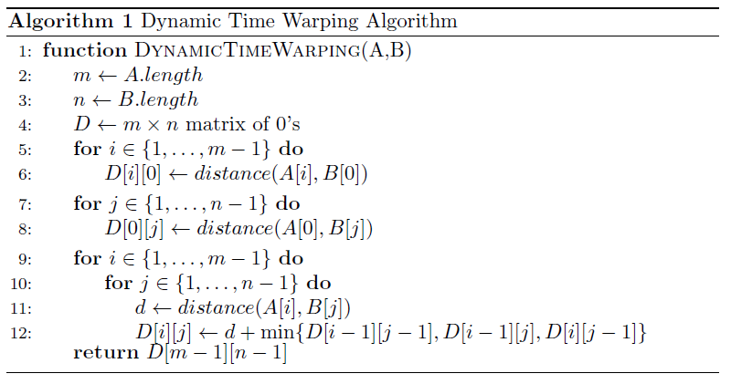

Dynamic Time Warping
Welcome to web application for visualizing the dynamic time warping. The construction of the warping
matrix and search for the optimal warping path are dynamic and interactive.
Select parameters and start visualizing! Learning DTW has never been easier and more fun!
Introduction
The task of the Dynamic Time Warping (DTW) algorithm is to measure
the similarity between two
sequences. DTW algorithm was introduced in \cite{Sakoe:1990:DPA:108235.108244} for speech
recognition
and since then has been applied to different problems in various fields.
The algorithm is is one of the
most important dynamic programming algorithms and it is crucial to understand its steps.
Algorithm
DTW algorithm calculates an optimal match between two sequences having time complexity O(mn).
The original version of the algorithm uses Euclidean distance, but other metrics can be applied.
In particular, most important of other metrics are Canberra and Minkowski distances, and of course
the absolute difference.
The algorithm for calculating DTW distance between given two sequences A and B is presented as
Algorithm 1.

...